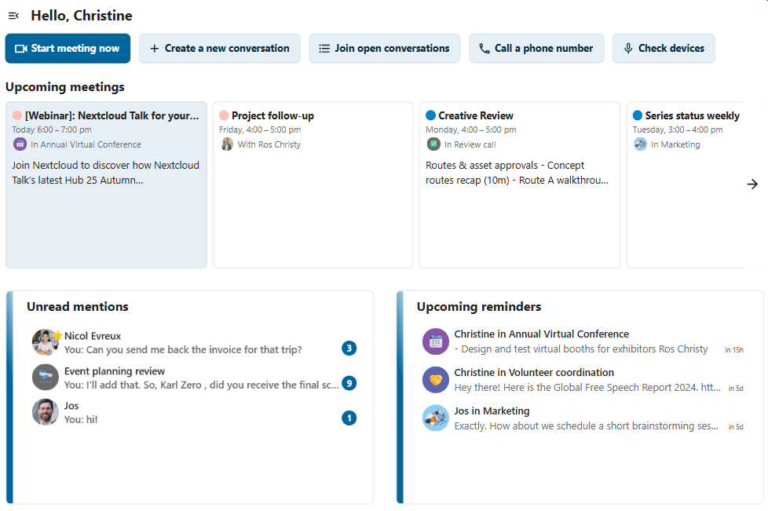
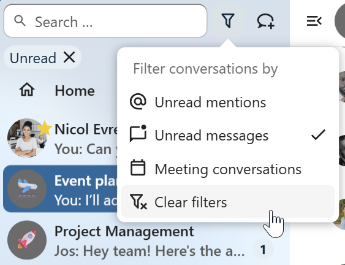
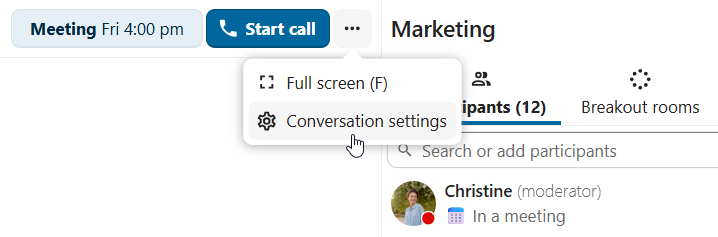
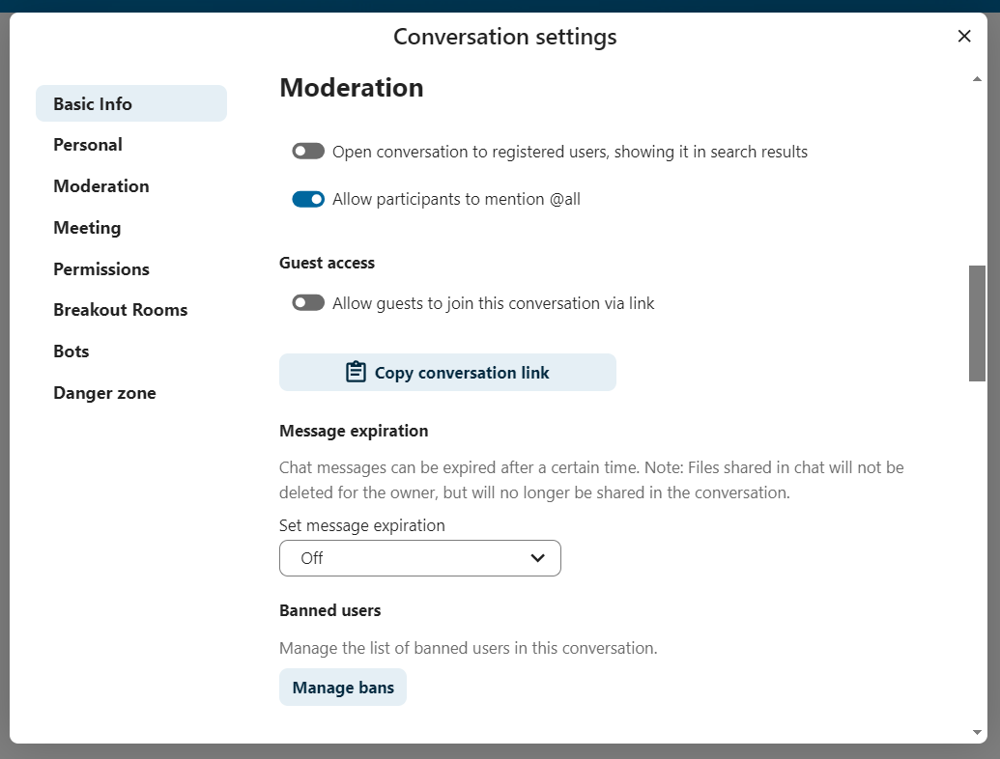
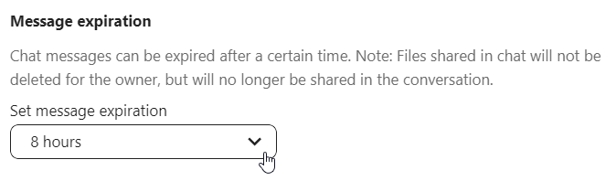
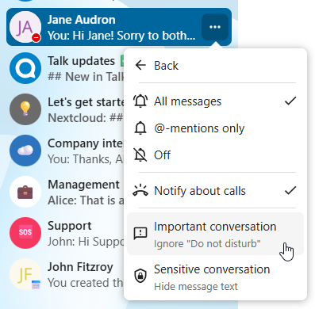

Conversations
Les discussions et les appels prennent place dans des conversations. Vous pouvez créer n’importe quel nombre de conversations. Il en existe différents types :
1. Conversations privées (tête-à-tête)
C’est ici que vous discutez ou appelez un autre utilisateur de Talk en privé.
Dans la barre latérale de la conversation, vous pouvez trouver des informations supplémentaires concernant la personne avec laquelle vous discutez, comme son adresse e-mail, son numéro de téléphone ou tout autre détail qu’elle aura partagé dans son profil.

Personne à part vous et l’autre personne ne peut voir cette conversation ou rejoindre un appel qui s’y tiendrait. Vous pouvez transformer un appel en cours pour en faire une nouvelle conversation de groupe en ajoutant davantage de personnes. L’appel se poursuivra dans ce groupe sans interruption.

Si un utilisateur n’est plus disponible et a défini un état hors du bureau dans Paramètres personnels > Disponibilités, vous trouverez des informations supplémentaires dans cette conversation, telles que la description fournie, la date d’absence ou la personne qui le remplace.

2. Conversations de groupe
Une conversation de groupe peut inclure n’importe quel nombre de personnes. Vous pouvez ajouter des utilisateurs internes, des invités par e-mail, des groupes ou des équipes à une conversation de groupe au moment de sa création ou lorsqu’elle existe déjà, via l’onglet Participants.
Une conversation de groupe peut être partagée avec un lien public afin que des invités puissent rejoindre une discussion et un appel. Elle peut également être ouverte aux utilisateurs enregistrés (ou aux utilisateurs de l’application “Invités”) pour qu’ils puissent découvrir et rejoindre cette conversation.

3. Note à soi-même
Il s’agit d’une conversation spéciale avec vous-même. Les messages qui s’y trouvent n’ont pas de limite d’édition ni de suppression. Vous pouvez l’utiliser pour :
Prendre des notes : mettez par écrit des idées, des rappels ou des informations importantes que vous voulez garder sous la main.
Créer des listes de tâches : utilisez la syntaxe Markdown pour créer des listes pour les tâches que vous devez terminer.
Transférer des messages d’une autre discussion : utilisez le menu des messages pour transférer vers les Notes à soi-même des messages importants provenant d’autres conversations.

4. Conversations jetables
Ces conversations couvrent certains cas particuliers et n’existent que pour une durée limitée. La durée de rétention peut être configurée par l’administration d’une instance :
Réunions instantanées : ces conversations peuvent être créées pour des réunions rapides ou sur le pouce. Elles peuvent être démarrées instantanément depuis le tableau de bord de Talk.
Conversations pour un événement: celles-ci sont créées quand elles sont définies comme un lieu pour l’événement dans l’application Agenda.
Conversations téléphoniques : celles-ci sont dédiées au passage d’appels SIP vers des téléphones (une passerelle SIP est requise).
Vérification vidéo : celles-ci sont créées, quand quelqu’un essaye d’accéder à un lien public, protégées par un mot de passe avec une vérification vidéo (supprimée juste après la fin de l’appel).

Tableau de bord de Talk
Le tableau de bord de Talk est l’interface centrale pour gérer et accéder à vos conversations. Il fournit une vue d’ensemble de vos :
Mentions et messages non lus dans les discussions privées ;
Rappels de messages, programmés pour être examinés plus tard ;
Réunions programmées, avec les détails de l’événement et des boutons de raccourci pour les rejoindre ;
Boutons de raccourcis pour créer de nouvelles conversations, rejoindre celles ouvertes ou vérifier rapidement vos périphériques.
{kind=link}

Création d’une conversation
Vous pouvez créer une discussion privée (en tête-à-tête) en recherchant le nom d’un utilisateur, d’un groupe ou d’une équipe, puis en cliquant dessus. Pour un utilisateur seul, la conversation est créée immédiatement et vous pouvez commencer à discuter. Pour un groupe ou une équipe, vous devez d’abord choisir un nom et des paramètres avant de créer la conversation et d’ajouter les participants.

Si vous souhaitez créer une discussion de groupe personnalisée, cliquez sur le bouton situé à côté du champ de recherche et du bouton des filtres, puis sur Créer une nouvelle conversation.

Vous pouvez ensuite choisir un nom pour la conversation, mettre une description et configurer un avatar (avec une photo ou un emoji téléversé), et choisir si la conversation doit être ouverte aux utilisateurs externes, et si d’autres utilisateurs sur le serveur peuvent voir et rejoindre la conversation.

Dans la deuxième étape, vous aurez à ajouter les participants et finaliser la création de la discussion.

Après confirmation, vous serez redirigé vers la nouvelle conversation et vous pourrez directement commencer à communiquer.

Filtrer vos conversations
Vous pouvez filtrer vos conversations en utilisant le bouton de filtrage à côté du champ de recherche. Il existe plusieurs options de filtrage : 1. Mentions non lues : montre les conversations privées ou conversations de groupe non lues dans lesquelles vous avez été mentionné. 2. Messages non lus : montre les messages non lus de toutes les conversations dont vous faites partie. 3. Conversations de réunion : montre toutes les conversations créées pour des événements passés ou à venir.

Vous pouvez ensuite effacer le filtre à partir du menu des filtres.
{kind=link}

Archiver des conversations
Vous pouvez archiver les conversations que vous n’avez plus besoin de voir dans votre liste principale de conversations. Quand une conversation est archivée, elle est déplacée dans la section Conversations archivées. Une conversation archivée n’apparaitra pas dans votre liste principale de conversations mais elle sera toujours alignée sur le niveau de notification défini dans ses paramètres.

La liste est accessible depuis le bouton en bas de la barre de navigation.

Gestion d’une conversation
Vous êtes toujours modérateur de vos nouvelles discussions. Depuis la liste des participants, vous pouvez promouvoir d’autres participants comme modérateurs en utilisant le menu ... à la droite de leur nom d’utilisateur, leur donner des permissions personnalisées ou les retirer de la discussion.
La modification des permissions d’un utilisateur qui a rejoint une conversation publique l’ajoutera également de manière permanente à la conversation.

Les modérateurs peuvent configurer la conversation. Sélectionnez Paramètres de la conversation dans le menu ... de la conversation en haut pour accéder aux paramètres.
{kind=link}

Ici vous pouvez configurer la description, l’accès des invités, si la conversation est visible aux autres du serveur, etc.
{kind=link}

Bannir des participants
Pour contribuer à maintenir les discussions sûres et sous contrôle, les modérateurs peuvent bannir les participants des conversations. Cela s’applique tant aux utilisateurs internes qu’aux invités ; pour les invités, leur adresse IP sera également bannie.
Dans la liste des participants, sélectionnez l’utilisateur ou l’invité puis cliquez sur Retirer le participant.

Ici, cochez la case Bannir aussi de cette conversation et indiquez une raison du bannissement. L’utilisateur banni sera retiré et ne pourra pas revenir.

Vous pouvez trouver plus tard la liste des utilisateurs bannis dans la section Modération des paramètres de la conversation. À cet endroit, vous pourrez voir la raison du bannissement et l’annuler si besoin.

Expiration des messages
Un modérateur peut configurer l’expiration des messages dans les Paramètres de la conversation, au sein de la section Modération. Une fois la durée d’expiration atteinte, le message est automatiquement supprimé de la conversation. Les durées d’expiration disponibles sont : 1 heure, 8 heures, 1 jour, 1 semaine, 4 semaines ou jamais (valeur par défaut).
{kind=link}

Notifications et confidentialité
Par défaut, Nextcloud Talk vous enverra des notifications concernant :
Nouveaux messages dans les conversations privées ;
Réponses aux messages que vous avez envoyés ;
Messages vous mentionnant ou mentionnant les groupes/équipes dont vous êtes membre ;
Appels lancés dans les conversations auxquelles vous participez.
Vous pouvez changer ce comportement dans les paramètres de la conversation. De plus, vous pouvez configurer :
Important conversations: you will be always notified about new messages, even if you are in « Do Not Disturb » mode;
Conversations sensibles : le contenu des messages ne sera pas affiché dans la liste des conversations et occulté dans les notifications.
{kind=link}

Pour avoir davantage de contrôle sur votre confidentialité, vous pouvez également configurer la visibilité de vos indicateurs de frappe et de lecture dans les Paramètres de Talk :